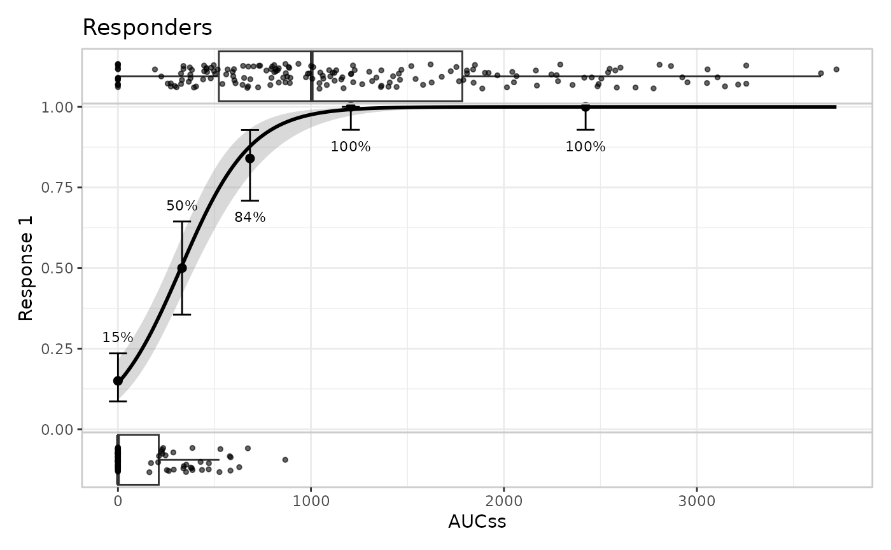

This article documents an implementation detail, not a public interface. Everything described below – the shape of
object$plot,object$layer, andobject$output, the names used internally, and the internal.polish_*()/.build_*()helpers – is unexported, undocumented in?er_plot, and not covered by erplots’ usual conventions. It can, and likely will, change in a future release without notice or a deprecation period. Nothing in this article should be relied on in package code, and any script that depends on it should be treated as tied to the erplots version it was written against.The preferred way to change how a plot looks is a custom
stylefunction (see Extending erplots). Read this article only if you’ve hit a case that mechanism genuinely can’t reach – e.g. a one-off tweak to a specific panel’s theme, or a fix you need right now and don’t want to write and register a whole custom builder for – and you’re willing to reach into the object and patch it by hand.
library(erplots)
library(erglm)
mod <- erglm_model(ae1 ~ aucss, erglm_data, family = binomial())
p <- erglm_data |>
er_plot(aucss, ae1) |>
er_plot_add_model(mod) |>
er_plot_add_quantiles() |>
er_plot_add_data(style = er_style_data_boxjitter)Two stages: object$plot, then
object$output
Calling plot() (or print()) on an
er_plot object calls er_plot_build() first.
er_plot_build() does its work in two stages, and both
intermediate results are kept on the returned object rather than
discarded:
built <- er_plot_build(p)
names(built)
#> [1] "data" "exposure" "response" "strata" "layer" "plot" "theme"
#> [8] "output"Stage one builds one ordinary ggplot2 object per
layer family, stored under built$plot. Stage
two (“polishing”: margins, axis/legend labels, discrete colour
scales, panel arrangement, legend deduplication, and the plot-level
theme) turns those separate ggplot2 objects into a single patchwork object,
stored under built$output. plot.er_plot()
itself is little more than
plot.er_plot <- function(x, y = NULL, ...) {
object <- er_plot_build(x)
plot(object$output)
}so built$output is exactly what you see rendered.
object$plot: one ggplot2 object per layer family
built$plot is a plain list with up to three slots –
base, data, group – each either
NULL or containing real ggplot2 object(s):
names(built$plot)
#> [1] "base" "data" "group"
class(built$plot$base)
#> [1] "ggplot2::ggplot" "ggplot" "ggplot2::gg" "S7_object"
#> [5] "gg"-
baseis a single ggplot2 object. It carries the model curve/ribbon, the quantile summary geoms, and the summary annotation – whichever of those layers are present – and only exists at all if at least one of them is (or if the plot has no layers whatsoever, in which case it’s an empty axes-only canvas). An"overlay"-layout data builder (the default,er_style_data_overlay()) also draws directly ontobase, rather than into its own panel – so a plot built with the default data style has aNULLbuilt$plot$dataeven though it clearly has a data layer:p_overlay <- erglm_data |> er_plot(aucss, ae1) |> er_plot_add_data() built_overlay <- er_plot_build(p_overlay) names(built_overlay$plot) #> [1] "base" "data" "group" is.null(built_overlay$plot$data) #> [1] TRUE -
datais a named list of ggplot2 objects – never a single bare object, even when there’s only one panel – used only by a"panel"-layout data builder (e.g.er_style_data_boxjitter(), used inpabove). The names are meaningful and depend on response type and stratification:"upper"/"lower"for the binary responder/non-responder split,"data"for a single unstratified continuous/count panel, or one name per stratum level when stratified and faceted.names(built$plot$data) #> [1] "upper" "lower" groupis a named list of ggplot2 objects, one per grouping variable added viaer_plot_add_groups(), keyed by variable name.NULLif no group layer was added.
object$output: the final patchwork object
class(built$output)
#> [1] "patchwork" "ggplot2::ggplot" "ggplot" "ggplot2::gg"
#> [5] "S7_object" "gg"built$output is what
patchwork::wrap_plots() produces from the individual panels
in built$plot (stacked vertically via
ncol = 1, sized by er_plot_theme()’s
height_* arguments, with guides = "collect"
and axes = "collect" to merge legends and align axes across
panels), plus patchwork::plot_annotation() for the
plot-level title/subtitle/caption.
A patchwork object behaves like an ordinary list of its constituent plots for indexing purposes, which is the most direct route to a hand patch: pull out the panel you want, modify it like any ggplot2 object, and put it back.
length(built$output)
#> [1] 3
built$output[[1]] <- built$output[[1]] + ggplot2::labs(title = "Responders")
built$output
This is usually less error-prone than editing built$plot
and re-running the polishing steps yourself, since it works entirely
with ordinary, already-composed ggplot2 objects and doesn’t need to know
about the internal .polish_*() helpers at all. Its
limitation is exactly that it operates after polishing –
e.g. adding a new discrete colour mapping this way won’t get the
cross-panel legend deduplication that
er_plot_theme(color_discrete = ...) gets, because that
logic already ran.
Summary
| Object | Type | Contains |
|---|---|---|
built$plot$base |
single ggplot object, or NULL
|
model/summary/quantile geoms, and an "overlay"-layout
data builder’s points |
built$plot$data |
named list, or NULL
|
one panel per "panel"-layout data builder’s output |
built$plot$group |
named list, or NULL
|
one panel per er_plot_add_groups() variable |
built$output |
single patchwork object |
all of the above, stacked, themed, and annotated |
Treat all of this as a snapshot of the current implementation, not a contract – see the warning at the top of this article.